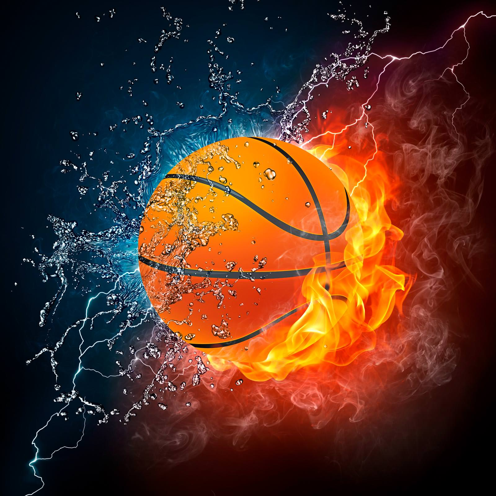

Баскетбол
Баскетбол (basket — корзина, ball — мяч) — всемирно известная спортивная игра, суть которой заключается в попадании мячом в кольцо (корзину) команды соперника. Хотя нет смысла объяснять, что такое баскетбол. Давайте лучше посмотрим 10 интересных фактов о баскетболе.
1. Известный во всем мире баскетболист Шакил о Нил за всю свою баскетбольную карьеру набрал около 30000 очков, но лишь один раз в жизни он смог попасть в корзину с дальней дистанции и забить трехочковый.
2. Во время награждения баскетбольной сборной золотыми медалями после олимпиады 1992 года, Майкл Джордан стоял, обернувшись в Американский флаг. Этот поступок не показывал высокой патриотичности Майкла, просто на тот момент у Джордана был контракт с фирмой Nike, а одет он был в форму Reebok.
3. Преподаватель Джеймс Нейсмит придумал бегать по полю с мячом и забрасывать его в подвешенную корзину придумали еще в 1891 году, но именно олимпийским видом спорта он стал лишь в 1935 году. Женский баскетбол вошел в олимпийскую программу еще позже – в 1976 году.
4. В России играть в баскетбол начали в в 1906 году в Санкт-Петербурге.
5. Изначально для игры в баскетбол использовался самый обычный футбольный мяч.
6. Самым высоким баскетболистом в истории считается игрок из Ливии Сулейман Али Нашнун его рост составляет 2.45 метра. Но на сегодняшний момент самым высоким считается Суданский баскетболист Мануте Бол, рост которого составляет 231 см.
7. Существует миф, что в баскетбол играют только высокие игроки (2 метра и веше), но это не так. Например одним из самых маленьких баскетболистов считается американец Магси Богз. Его рост составляет всего 160 сантиметров. Также в НБА насчитывается множество баскетболистов, рост которых не превышает 170 сантиметров.
8. Когда создали баскетбол, в правилах значилось всего 13 пунктов. Сейчас это количество превышает 200.
9. Певица Земфира, будучи старшеклассницей, несмотря на свой небольшой рост, была капитаном юниорской сборной России по баскетболу.
10. Больше всего чемпионатов NBA выиграла команда Бостон Celtics. За всю историю насчитывается 16 побед.
Бокс
Бокс - контактный вид спорта, единоборство, в котором спортсмены наносят друг другу удары кулаками обычно в специальных перчатках.
1. Разные археологические находки свидетельствуют о том, что кулачные бои с участием не только бойцов, но и зрителей, были известны около 7 тысяч лет назад. Боксировать в перчатках спортсмены начали в 1500-900 годах н. э.
2. Официальные правила современного бокса были разработаны в 1867 году Джоном Грэхэмом Чемберсом, членом любительского атлетического клуба. Автора материально поддержал маркиз Куинсберри Джон Шолто Дуглас, и с тех пор свод правил начали ассоциировать с его именем.
3. В XIX веке бокс как вид спорт не был законным, и только в начале ХХ века при поддержке промоутеров бокс приобрел законный статус, а вскоре появились и различные институты, которые регулировали проведение спортивных состязаний.
4. В 1904 году бокс снова приобрел статус Олимпийского вида спорта. Первым чемпионом мира тогда стал Джон Салливан.
5. Современный бокс бывает профессиональным, полупрофессиональным и любительским. В любительском боксерском поединке есть система подсчета очков, бой состоит только из трех раундов, а спортсмены обязательно надевают шлем. В полупрофессиональном боксе спортсменам разрешается зарабатывать деньги, но спортсмены могут участвовать в Олимпийских играх. Бои в профессиональном боксе состоят из 10-12 раундов, шлемы не используются, и спортсмены соревнуются за денежные призы.
6. В 1999 году состоялся первый в мире официальный поединок между боксером-мужчиной и боксером-женщиной. Примечательно, что первое место завоевала женщина.
7. Рокки Марчиано — американский профессиональный боксер и чемпион мира в тяжелом весе. Это единственный боксер-тяжеловес, который ни разу не потерпел поражения за 49 проведенных боев.
8. Абсолютным чемпионом мира в боксе может быть объявлен тот боксер, который в своем виде бокса завоюет три из четырех существующих чемпионских поясов. Современные чемпионские пояса изготавливаются из натуральной кожи и украшаются позолотой и полудрагоценными камнями.
9. Украинский профессиональный боксер Владимир Кличко по состоянию на 2013 год является единым чемпионом мира в тяжелой весовой категории по версии трех из четырех существующих боксерских организаций (WBA, IBF и WBO).
10. Самый высокий гонорар за всю историю профессионального бокса (35 млн долл.) получил американский боксер Майк Тайсон, который был не только абсолютным чемпионом мира в тяжелом весе, но и дважды рекордсменом Книги рекордов Гиннесса.
Волейбол

Волейбол - это всенародно любимая командная игра с мячом, в которую играют и взрослые, и дети. В переводе с английского volleyball можно перевести как «ударить мяч на лету». Играют в эту игру двумя командами на специальной площадке.
1. Игра в волейбол была изобретена в 1895 году Уильямом Морганом. Это был гениальный преподаватель физкультуры, который назвал эту дисциплину mintonette. Такое название было производным слова badminton.
2. В 1964 году данный вид спорта был представлен на олимпийских играх, а в 1983 году на матч СССР и Бразилии собрались десять тысяч человек. Это рекорд посещаемости волейбольного матча в мире.
3. Большинство волейболистов прыгают в среднем 250 раз за матч и пробегают расстояние в 750 метров, поэтому у профессионалов очень развиты мышцы ног. Данный вид спорт тренирует все виды мышц и является наиболее безопасным из игр с мячом.
4. Волейбол на разных этапах включал в себя особенности других спортивных игр, таких как теннис, гандбол, бейсбол и баскетбол. Раньше в качестве разделителя использовалась теннисная сетка, высота которой 1970 мм. До 1900 года в волейболе использовалась резиновая камера похожая на баскетбольный мяч. волейбольный и баскетбольный мяч
5. Скорость полета мяча в среднем составляет 60 километров в час. Максимально зафиксированная подача составляла 135 километров в час. Рекорд принадлежит Болгарскому волейболисту Матею Казийски.
6. Матей Казийски помимо непревзойденной скорости подачи обладает рекордом по высоте прыжка. Уровень максимальной точки касания мяча зафиксирован на отметке 3 м 93 см. Высота спортсмена составляет 203 см. Таким образом прыжок составил 190 см выше роста спортсмена.
7. Волейбол сегодня является вторым по популярности видом спорта в мире, уступая только футболу. На уровне увлечения им занимаются около одного миллиарда людей или 15 процентов всех людей планеты.
8. Самый эффективный игрок в мире оказался из сборной Канады по имени Гэвин Шмитт. За один матч он принес своей команде 58 очков.
9. Волейбол - единственная игра по правилам которой мяч не может касаться земли. Также волейбол — это игра где играют не на время, а на результат. Благодаря этому правилу длительность матча может быть бесконечно увеличена.
10. В истории олимпийских игр был случай в 1976 году, когда сборные Польши и СССР играли в волейбол 6,5 часов. Но абсолютный рекорд был зафиксирован в Кингстоне, штат Северная Каролина. Продолжительность матча составила 75,5 часов! Это больше 3 дней!
Теннис

Теннис – это и увлекательная игра и серьезный вид спорта. Теннис бывает настольный и большой. Вот 10 фактов о большом теннисе.
1. Родиной первой игры принято считать Древнюю Грецию. Правда на тот момент она отдаленно напоминала теннис. Например, отсутствие ракеток не остановило игровой процесс – были использованы палки. Если последних не было, то играли просто руками. В Италии в двенадцатом веке мяч отбивали рукавицей ремнем или малым щитом. В качестве материала для последнего использовалось дерево, а для ремня – кожа.
2. Такой обычай зародился сначала в древнем Египте, а затем переместился и в Испанию. Монахи последней страны боролись, чтобы он не покинул монастырские стены. Была даже попытка запретить игру, но по истечению четырех веков она все-таки вырвалась из священного мира.
3. В теннис любили играть королевские английские и французские семьи. Например, Генрих Второй играл лучше всех во Франции, а Людовик Четырнадцатый имел личный корт. В целом, теннис считали игрой для благородных людей.
4. Не каждый спортсмен, как казалось, может отличаться бережным отношением к теннисному инвентарю. Например, Марат Сафин в течение всей своей игровой карьеры переломал более семисот ракеток.
5. Изначально он был деревянным, но со временем его стали делать из кожи. В качестве наполнителя использовались высушенные внутренности животных или шерсть. Удар подобным инвентарем мог нанести серьезную травму или привести к смерти.
6. Скорости в данной игре отводится отдельная роль. Среди представительниц прекрасного пола лучшая скоростная подача принадлежит Винус Уильямс – двести пять километров в час. Из мужчин Иво Карлович достиг рекорда в двести пятьдесят один километр в час.
7. Около пятидесяти лет назад люди играли с белыми мячами. Сегодня чаще используют желтые. Наверное, тебя интересует, почему же поменялся цвет? Все просто – учеными было установлено, что желтый оттенок лучше воспринимается жюри и всеми, кто смотрит турнир.
8. Рене Ричардс – это единственная девушка, которая принимала участие и в мужском, и в женском разряде. Почему? Потому что она сменила пол.
9. С самого начала такую одежду можно было увидеть только у игроков в теннис, например, у Рене Лакоста. Он победил турнир Большого шлема. Спустя время, в 1927 году, Рене нанес изображение крокодила на рубашку. Так и появился бренд Lacoste, который сегодня довольно популярен.
10. Речь идет об Анне Курниковой, которая за все годы теннисной карьеры не смогла выиграть хотя бы один серьезный турнир, если рассматривать одиночный разряд. «АК» – так ее прозвали игроки в покер. Все потому, что она красивая, но редко побеждает.
Футбол
Футбол (от англ. foot — ступня, ball — мяч) — самый популярный командный вид спорта в мире, целью в котором является забить мяч в ворота соперника большее число раз, чем это сделает команда соперника в установленное время. Мяч в ворота можно забивать ногами или любыми другими частями тела (кроме рук).
1. Мировой чемпионат по футболу иногда называют распространенным словом «Мундиаль». Это испанское слово, которое на этом языке означает «мировой, охватывающий весь мир». Таким дополнительным словом болельщики и комментаторы назвали его еще в 1982 году. После название прижилось, и сегодня термином «Мундиаль» называют любой Чемпионат мира по футболу.
2. Однажды при встрече двух шотландских команд сгустился сильный туман. Футболисты долго искали друг друга и не могли увидеть даже мяч под ногами. Подбежав к скамейкам запасных, он никого не увидел. Игру судья тут же прервал. Оказалось, что на поле одновременно было тридцать игроков.
3. В августе 1981 года между двумя ирландскими командами футбольного клуба «Каллинаферси» в Керри был проведен самый длинный футбольный матч. Игра длилась 65 часов и 1 минуту.
4. Известная футбольная кричалка «Оле-Оле-Оле» родом из Испании, где слово «Оле» кричали на корриде или танцах фламенко. А походит оно от слова «Аллах», которое повторяли в молитвах арабские завоеватели Испании в 8 веке.
5. Считается, что одиннадцатиметровый удар за нарушение в штрафной площади ворот предложил ирландский футбольный эксперт Джон Пенальти в 1891 году. И его именем назвали штрафной. На деле такого человека не существовало, а пенальти предложил Уильям Маккрам. Идею назвали death penalty (смертной казнью). Это действительно произошло в 1891 году.
6. Оказывается, что футбольное поле выглядит полосатым не потому, что сеют два вида травы. Просто траву стригут в разных направлениях газонокосилками, которые не только ее срезают, но и приминают. Из-за этого, при отражении света создается эффект полосатости.
7. Одному из болельщиков «Реал Мадрида» по имени Гаэль однажды никак не смог приобрести билет на желанный матч своей команды. Но всего за две минуты до начального свистка судьи ему был уступлен билет другим болельщиком по случайной неожиданности. На радостных чувствах, он передал свой лотерейный билет в знак благодарности. Случайно подаренный лотерейный билет был выигрышным и принес новому владельцу больше 300 тысяч песет.
8. Голкипер по имени Джимми Тейлор считается самым неудачным и непрофессиональным в мире современного футбола. В среднем за один матч он мог пропускать более 17 мячей с регулярной постоянностью. За один из коротких сезонов в его ворота влетели почти пол тысяч мячей.
9. В середине прошлого века проходил Чемпионат Мира по футболу, в котором Федерация Футбола запретила участвовать трем командам по простой причине: они желали играть только босиком. Это были шотландцы, турки и индусы. Возможно, это было связано с религиозными принципами или невозможностью приобрести настоящие бутсы.
10. В 1959 году на одном из немецких стадионов проводилось две игры одновременно – на одном поле бегало четыре команды. Причиной стала ошибка менеджеров стадиона, которые назначили в один час сразу две игры.
Хоккей
Хокке́й (англ. Hockey) — вид спорта, в котором две команды стараются поразить твёрдым, круглым мячом или шайбой цель — ворота противника, используя клюшки. В каждой команде есть один вратарь, который защищает ворота своей команды.
1. Самый первый в мире хоккейный матч был проведен 3 марта 1875 года в Монреале (Канада).
2. До 1904 года хоккейная команда состояла из девяти человек, а теперь из шести.
3. В 2008 году Россия впервые выиграла чемпионат мира по хоккею.
4. Первые 4 года (1875—1879) для игры в хоккей использовалась деревянная шайба.
5. До 1917 года вратарям было запрещено падать на лед, в т.ч. и для того, чтобы поймать шайбу. Это действие наказывалось малым штрафом.
6. Откуда произошло слово хоккей? Существует три версии происхождения слова «Хоккей». Первая гласит, что слово пошло оно от слова «Хоки», что означало праздник сбора урожая, после которого было принято играть в коммандную игру изогнутыми палками. Другая версия гласит, что хоккей «пошел» от индейского слова «Хоги», так как индейцы под этим названием подразумевали похожую игру. Самая распространенная версия гласит, что слово «Хоккей» пошло от французского слова «hoquet», что переводится как «посох пастуха».
7. Несмотря на то, что основателями хоккея являются канадцы, чемпионат мира не проходил в Канаде аж до 2008 года.
8. Самая быстрая шайба в истории НХЛ была забита аж на 5-ей секунде канадским нападающим Брайаном Тротье «Нью-Йорк Айдендерс» против «Бостона» в 1984 году. Позже этот рекорд был продублирован нашим хоккеистом Александром Могильным в 1991 году, когда он играл за «Баффало». А рекорд чемпионата России составляет 6 секунд. Эта шайба принадлежит Александру Радулову, которую он запустил в ворота «Югры».
9. Раньше перед игрой шайбу всегда аккуратно клали на лед, но из-за частых травм арбитров с 1914 года шайбу решено было сбрасывать на лед.
10. Манон Реом – первая женщина, которая играла в НХЛ причем за мужскую лигу (1992—1997).
11. На купюре 5 канадских долларов изображена игра в хоккей.
12. В 1971 году советскими поэтами Сергеем Гребенниковым и Николаем Добронравовым на музыку Александры Пахмутовой была написана знаменитая спортивная песня «Трус не играет в хоккей». Впервые эта песня была исполнена Эдуардом Хилем.
13. Самый крупный счет в хоккейном матче – 92:0. Этот матч произошел на юношеском чемпионате Азии и Океании по хоккею в 1998 году между сборными Таиланда (0) и Южной Кореи (92).
14. В 2008 году международная хоккейная ассоциация объявила лучшую пятерку игроков за всю историю хоккея (правда игроков получилось шесть). Было опрошено 56 экспертов из 16 разных стран. Что удивительно, эта «пятерка» больше чем наполовину состоит из советских игроков.
15. Машина для восстановления поверхности льда катка называется Ресурфейсер.